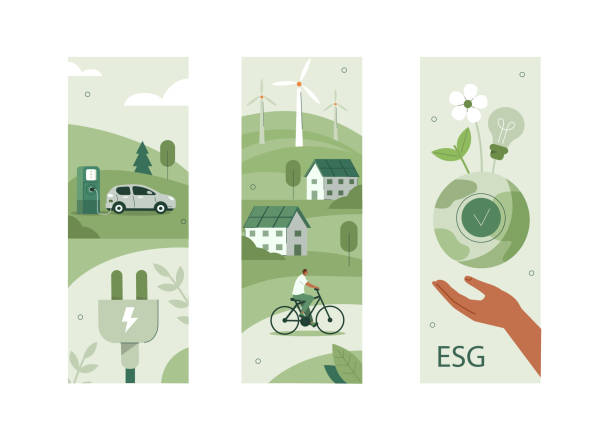
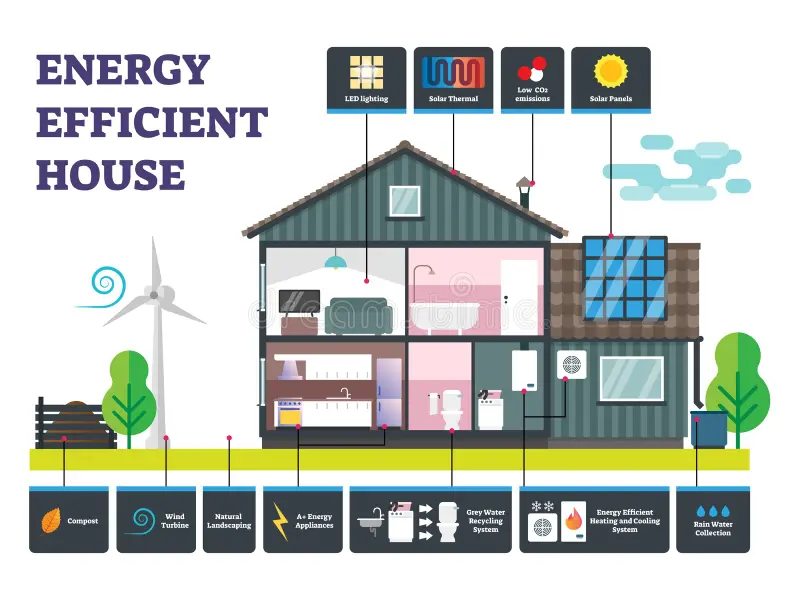
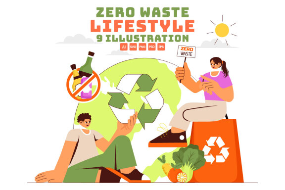

Sustainable Living
Practical ways to reduce your environmental impact
Introduction to Sustainable Living
Sustainable living is about reducing our environmental impact by making conscious choices in our daily lives. It involves adopting practices that minimize resource consumption, reduce waste, and promote the health of our planet and its ecosystems.
By embracing sustainable living, we can contribute to mitigating climate change, conserving natural resources, and creating a more equitable world for current and future generations.
Key Fact
According to the United Nations, sustainable consumption and production patterns could reduce global greenhouse gas emissions by 40-70% by 2050.
Energy Efficiency
Energy efficiency is a crucial aspect of sustainable living. It involves using less energy to perform the same tasks, reducing both energy consumption and greenhouse gas emissions.
Here are some ways to improve energy efficiency in your home:
- Use LED light bulbs instead of incandescent ones
- Upgrade to energy-efficient appliances
- Improve home insulation to reduce heating and cooling needs
- Use smart thermostats to optimize energy use
- Unplug electronics when not in use to avoid phantom energy consumption
Key Fact
The International Energy Agency estimates that energy efficiency improvements could account for more than 40% of the emissions reductions needed to meet global climate goals.
Waste Reduction
Reducing waste is essential for sustainable living. It helps conserve natural resources, decrease pollution, and lower greenhouse gas emissions associated with waste management.
Here are some strategies for reducing waste:
- Practice the 3 Rs: Reduce, Reuse, Recycle
- Compost organic waste
- Use reusable bags, water bottles, and food containers
- Buy products with minimal packaging
- Repair items instead of replacing them when possible
Key Fact
The World Bank estimates that global waste generation will increase by 70% by 2050 unless urgent action is taken. Waste reduction efforts are crucial to mitigate this trend.
Sustainable Transportation
Transportation is a significant source of greenhouse gas emissions. Opting for sustainable transportation methods can greatly reduce your carbon footprint.

Consider these sustainable transportation options:
- Walking or cycling for short distances
- Using public transportation
- Carpooling or car-sharing
- Switching to an electric or hybrid vehicle
- Combining trips to reduce overall travel
Key Fact
The transportation sector accounts for approximately 14% of global greenhouse gas emissions. Sustainable transportation choices can significantly impact this figure.
Eco-friendly Products
Choosing eco-friendly products is an important aspect of sustainable living. These products are designed to have minimal environmental impact throughout their lifecycle.
Here are some types of eco-friendly products to consider:
- Biodegradable cleaning products
- Organic, locally-sourced food
- Clothing made from sustainable materials
- Rechargeable batteries
- Solar-powered devices
Key Fact
A study by Nielsen found that 73% of global consumers say they would definitely or probably change their consumption habits to reduce their environmental impact.